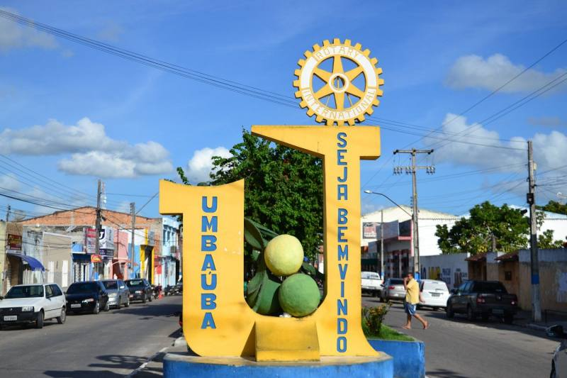

Umbaúba
História
Positivamente, pelo ano de 1602, Belchior Dias Moreira, que veio a tornar-se celebre como pesquisador de minas e desbravador de Sertões, obteve uma sesmaria no rio Guararema, penetrando a parte oriental do território que forma o Município de Umbauba, próximo ao local de sua sede hoje. Na década de 1860 a 1870 o local onde veio a surgir a povoação era uma fazenda de gado por nome Fazenda Sabiá, pertencente ao Coronel Manoel Fernandes da Rocha Braque, termo do Município de Espírito Santo, hoje Indiaroba.
Conta-se que no ponto onde se formou o lugarejo, próximo ao Riacho da Guia, havia um frondoso pé de Umbauba, onde tropeiros fazia pousada. Aí foi construído um posto de venda de bebidas e gêneros alimentícios, depois outros caminheiros foram também se instalando, cujo arraial passou a chamar-se “Riacho da Guia”. O proprietário da Fazenda, verdadeiro fundador da povoação, logo construiu uma capela, dedicando-a a Nossa Senhora da Guia.
Pela Lei nº 961, de 16 de outubro de 1926, foi criado o seu distrito. Mais tarde, pela Divisão Territorial do Estado, aparece Umbauba ainda fazendo parte do município de Cristinápolis. Por força do disposto na Lei Federal nº 311, de 2 de Março de 1938, a povoação Umbauba é elevada à categoria de Vila.
Pela Lei Estadual 525-A, de 6 de fevereiro de 1954, devido ao seu desenvolvimento comercial e agropecuário, Umbauba é elevada à categoria de cidade, desmembrando-se, portanto, do Município de Cristinápolis.
fonte: https://cidades.ibge.gov.br/brasil/se/umbauba/historicoPontos Turísticos
Praça de Eventos de Umbaúba
A praça de eventos é o point da cidade com os quiosques e o ginásio de esporte do SESI com o seu esplendor.
Dados Gerais de acordo com o IBGE
| Prefeito (a) | Humberto Santos Costa "Maravilha" |
| Vice-Prefeito (a) | Professsora Guadalupe |
| Site do município | https://www.umbauba.se.gov.br/site |
| Área territorial | 121,101 km² |
| População estimada | 24.832 pessoas |
| Densidade demográfica | 205,1 hab./km² |
| IDHM | 0,579 |
| PIB per capita | R$ 5.216,38 |